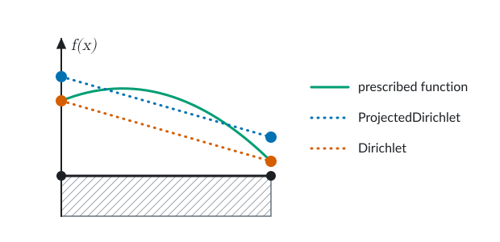
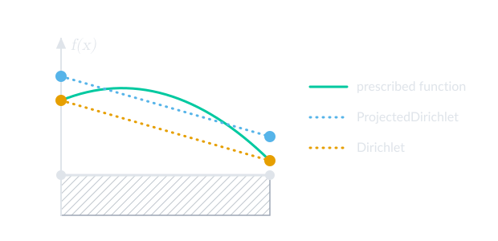

Boundary and initial conditions
Every PDE is accompanied with boundary conditions. There are different types of boundary conditions, and they need to be handled in different ways. Below we discuss how to handle the most common ones, Dirichlet and Neumann boundary conditions, and how to do it in Ferrite.
While boundary conditions can be applied directly to nodes, vertices, edges, or faces, they are most commonly applied to facets. Each facet is described by a FacetIndex. When adding boundary conditions to points instead, vertices are preferred over nodes.
Dirichlet boundary conditions
At a Dirichlet boundary the unknown field is prescribed to a given value. For the discrete FE-solution this means that there are some degrees of freedom that are fixed. To handle Dirichlet boundary conditions in Ferrite we use the ConstraintHandler. A constraint handler is created from a DoF handler:
ch = ConstraintHandler(dh)We can now create Dirichlet constraints and add them to the constraint handler. To create a Dirichlet constraint we need to specify a field name, a part of the boundary, and a function for computing the prescribed value. Example:
dbc1 = Dirichlet( :u, # Name of the field getfacetset(grid, "left"), # Part of the boundary x -> 1.0, # Function mapping coordinate to a prescribed value)The field name is given as a symbol, just like when the field was added to the dof handler, the part of the boundary where this constraint is active is given as a facet set, and the function computing the prescribed value should be of the form f(x) or f(x, t) (coordinate x and time t) and return the prescribed value(s).
To apply a constraint on multiple facet sets in the grid you can use union to join them, for example
left_right = union(getfacetset(grid, "left"), getfacetset(grid, "right"))creates a new facetset containing all facets in the "left" and "right" facetsets, which can be passed to the Dirichlet constructor.
By default the constraint is added to all components of the given field. To add the constraint to selected components a fourth argument with the components should be passed to the constructor. Here is an example where a constraint is added to component 1 and 3 of a vector field :u:
dbc2 = Dirichlet( :u, # Name of the field getfacetset(grid, "left"), # Part of the boundary x -> [0.0, 0.0], # Function mapping coordinate to prescribed values [1, 3], # Components)Note that the return value of the function must match with the components – in the example above we prescribe components 1 and 3 to 0 so we return a vector of length 2.
Adding the constraints to the constraint handler is done with add!:
add!(ch, dbc1)add!(ch, dbc2)Finally, just like for the dof handler, we need to use close! to finalize the constraint handler. Internally this will then compute the degrees-of-freedom that match the constraints we added.
If one or more of the constraints depend on time, i.e. they are specified as f(x, t), the prescribed values can be recomputed in each new time step by calling update! with the proper time, e.g.:
for t in 0.0:0.1:1.0 update!(ch, t) # Compute prescribed values for this t # Solve for time t...endMost examples make use of Dirichlet boundary conditions, for example Heat Equation.
ProjectedDirichlet
Some interpolations don't have nodal support points: $H(\mathrm{curl})$ interpolations, e.g., Nedelec, are associated to edges and faces, while $H(\mathrm{div})$ interpolations, e.g. RaviartThomas, are associated to facets. While normal Dirichlet boundary conditions assume the existence of such nodal support points, Ferrite provides the ProjectedDirichlet, which instead finds the degree of freedom values that minimizes the L2-distance between the prescribed function, $f(\boldsymbol{x},t,\boldsymbol{n})$, and the finite element interpolation space, cf. [8]. Although standard interpolations are not currently supported, the figure below illustrates well the difference between applying a standard Dirichlet condition and a ProjectedDirichlet condition when the prescribed function cannot be described by the chosen FE-interpolation.


Here, we note that while the Dirichlet condition gives the correct value at the nodes, the ProjectedDirichlet gives a more accurate average boundary value (specifically the L2 projection of f(x) onto the finite element space).
Neumann boundary conditions
At the Neumann part of the boundary we know something about the gradient of the solution. Two different methods for applying these are described below. For complete examples that use Neumann boundary conditions, please see
Using the FacetIterator
A Neumann boundary contribution can be added by iterating over the relevant facetset by using the FacetIterator. For a scalar field, this can be done as
grid = generate_grid(Quadrilateral, (3, 3))dh = DofHandler(grid); add!(dh, :u, Lagrange{RefQuadrilateral, 1}()); close!(dh)fv = FacetValues(QuadratureRule{RefQuadrilateral}(2), Lagrange{RefQuadrilateral, 1}())f = zeros(ndofs(dh))fe = zeros(ndofs_per_cell(dh))qn = 1.0 # Normal fluxfor fc in FacetIterator(dh, getfacetset(grid, "right")) reinit!(fv, fc) fill!(fe, 0) for q_point in 1:getnquadpoints(fv) dΓ = getdetJdV(fv, q_point) for i in 1:getnbasefunctions(fv) δu = shape_value(fv, q_point, i) fe[i] += δu * qn * dΓ end end assemble!(f, celldofs(fc), fe)endAlternatively, it is possible to add the values directly to the global f (without going through the local fe vector and then using assemble!):
# ...dofs = celldofs(fc)for i in 1:getnbasefunctions(fv) f[dofs[i]] += δu * qn * dΓendIn the element routine
Alternatively, the following code snippet can be included in the element routine, to evaluate the boundary integral:
for facet in 1:nfacets(cell) if (cellid(cell), facet) ∈ getfacetset(grid, "Neumann Boundary") reinit!(facetvalues, cell, facet) for q_point in 1:getnquadpoints(facetvalues) dΓ = getdetJdV(facetvalues, q_point) for i in 1:getnbasefunctions(facetvalues) δu = shape_value(facetvalues, q_point, i) fe[i] += δu * qn * dΓ end end endendWe start by looping over all the facets of the cell, next we check if this particular facet is located on our facetset of interest called "Neumann Boundary". If we have determined that the current facet is indeed on the boundary and in our facetset, then we reinitialize FacetValues for this facet, using reinit!. When reinit!ing FacetValues we also need to give the facet number in addition to the cell. Next we simply loop over the quadrature points of the facet, and then loop over all the test functions and assemble the contribution to the force vector.
Periodic boundary conditions
Periodic boundary conditions ensure that the solution is periodic across two boundaries. To define the periodicity we first define the image boundary $\Gamma^+$ and the mirror boundary $\Gamma^-$. We also define a (unique) coordinate mapping between the image and the mirror: $\varphi:\ \Gamma^+\, \rightarrow\, \Gamma^-$. With the mapping we can, for every coordinate on the image, compute the corresponding coordinate on the mirror:
\[\boldsymbol{x}^- = \varphi(\boldsymbol{x}^+),\quad \boldsymbol{x}^- \in \Gamma^-,\, \boldsymbol{x}^+ \in \Gamma^+.\]
We now want to ensure that the solution on the image $\Gamma^+$ is mirrored on the mirror $\Gamma^-$. This periodicity constraint can thus be described by
\[u(\boldsymbol{x}^-) = u(\boldsymbol{x}^+).\]
Sometimes this is written as
\[\llbracket u \rrbracket = 0,\]
where $\llbracket \bullet \rrbracket := \bullet(\boldsymbol{x}^+) - \bullet(\boldsymbol{x}^-)$ is the "jump operator". Thus, this condition ensures that the jump, or difference, in the solution between the image and mirror boundary is zero – the solution becomes periodic. For a vector valued problem the periodicity constraint can in general be written as
\[\boldsymbol{u}(\boldsymbol{x}^-) = \boldsymbol{R} \cdot \boldsymbol{u}(\boldsymbol{x}^+) \quad \Leftrightarrow \quad \llbracket \boldsymbol{u} \rrbracket = \boldsymbol{R} \cdot \boldsymbol{u}(\boldsymbol{x}^+) - \boldsymbol{u}(\boldsymbol{x}^-) = \boldsymbol{0}\]
where $\boldsymbol{R}$ is a rotation matrix. If the mapping between mirror and image is simply a translation (e.g. sides of a cube) this matrix will be the identity matrix.
In Ferrite this type of periodic Dirichlet boundary conditions can be added to the ConstraintHandler by constructing an instance of PeriodicDirichlet. This is usually done it two steps. First we compute the mapping between mirror and image facets using collect_periodic_facets. Here we specify the mirror set and image sets (the sets are usually known or can be constructed easily ) and the mapping $\varphi$. Second we construct the constraint using the PeriodicDirichlet constructor. Here we specify which components of the function that should be constrained, and the rotation matrix $\boldsymbol{R}$ (when needed). When adding the constraint to the ConstraintHandler the resulting dof-mapping is computed.
Here is a simple example where periodicity is enforced for components 1 and 2 of the field :u between the mirror boundary set "left" and the image boundary set "right". Note that no rotation matrix is needed here since the mirror and image are parallel, just shifted in the $x$-direction (as seen by the mapping φ):
# Create a constraint handler from the dof handlerch = ConstraintHandler(dofhandler)# Compute the facet mappingφ(x) = x - Vec{2}((1.0, 0.0))facet_mapping = collect_periodic_facets(grid, "left", "right", φ)# Construct the periodic constraint for field :updbc = PeriodicDirichlet(:u, facet_mapping, [1, 2])# Add the constraint to the constraint handleradd!(ch, pdbc)# If no more constraints should be added we can closeclose!(ch)PeriodicDirichlet constraints are imposed in a strong sense, so note that this requires a periodic mesh such that it is possible to compute the facet mapping between facets on the mirror and boundary.
Periodic boundary conditions are used in the following examples Computational homogenization, Stokes flow.
Heterogeneous "periodic" constraint
It is also possible to define constraints of the form
\[\llbracket u \rrbracket = \llbracket f \rrbracket \quad \Leftrightarrow \quad u(\boldsymbol{x}^+) - u(\boldsymbol{x}^-) = f(\boldsymbol{x}^+) - f(\boldsymbol{x}^-),\]
where $f$ is a prescribed function. Although the constraint in this case is not technically periodic, PeriodicDirichlet can be used for this too. This is done by passing a function to PeriodicDirichlet, similar to Dirichlet, which, given the coordinate $\boldsymbol{x}$ and time t, computes the prescribed values of $f$ on the boundary.
Here is an example of how to implement this type of boundary condition, for a known function f:
pdbc = PeriodicDirichlet( :u, facet_mapping, (x, t) -> f(x), [1, 2],)One application for this type of boundary conditions is multiscale modeling and computational homogenization when solving the finite element problem for the subscale. In this case the unknown $u$ is split into a macroscopic part $u^{\mathrm{M}}$ and a microscopic/fluctuation part $u^\mu$, i.e. $u = u^{\mathrm{M}} + u^{\mu}$. Periodicity is then usually enforced for the fluctuation part, i.e. $\llbracket u^\mu \rrbracket = 0$. The equivalent constraint for $u$ then becomes $\llbracket u \rrbracket = \llbracket u^{\mathrm{M}} \rrbracket$.
As an example, consider first order homogenization where the macroscopic part is constructed as $u^{\mathrm{M}} = \bar{u} + \boldsymbol{\nabla} \bar{u} \cdot [\boldsymbol{x} - \bar{\boldsymbol{x}}]$ for known $\bar{u}$ and $\boldsymbol{\nabla} \bar{u}$. This could be implemented as
pdbc = PeriodicDirichlet( :u, facet_mapping, (x, t) -> ū + ∇ū ⋅ (x - x̄))Initial conditions
When solving time-dependent problems, initial conditions, different from zero, may be required. For finite element formulations of ODE-type, i.e. $\boldsymbol{u}'(t) = \boldsymbol{f}(\boldsymbol{u}(t),t)$, where $\boldsymbol{u}(t)$ are the degrees of freedom, initial conditions can be specified by the apply_analytical! function. For example, specify the initial pressure as a function of the y-coordinate
ρ = 1000; g = 9.81 # density [kg/m³] and gravity [N/kg]grid = generate_grid(Quadrilateral, (10, 10))dh = DofHandler(grid); add!(dh, :u, Lagrange{RefQuadrilateral, 1}()^2); add!(dh, :p, Lagrange{RefQuadrilateral, 1}()); close!(dh)u = zeros(ndofs(dh))apply_analytical!(u, dh, :p, x -> ρ * g * x[2])See also Transient heat equation for one example.
apply_analytical! does not enforce consistency of the applied solution with the system of equations. Some problems, like for example differential-algebraic systems of equations (DAEs) need extra care during initialization. We refer to the paper "Consistent Initial Condition Calculation for Differential-Algebraic Systems" by Brown et al. for more details on this matter.